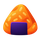

Phone Only
Stroke Order practice works best on a phone with touch input.
Open this page on your phone to practice.
Stroke Order
人
person (hito)
Strokes: 0 / 2

Onigiri-giriStroke Order
Stroke Order practice works best on a phone with touch input.
Open this page on your phone to practice.